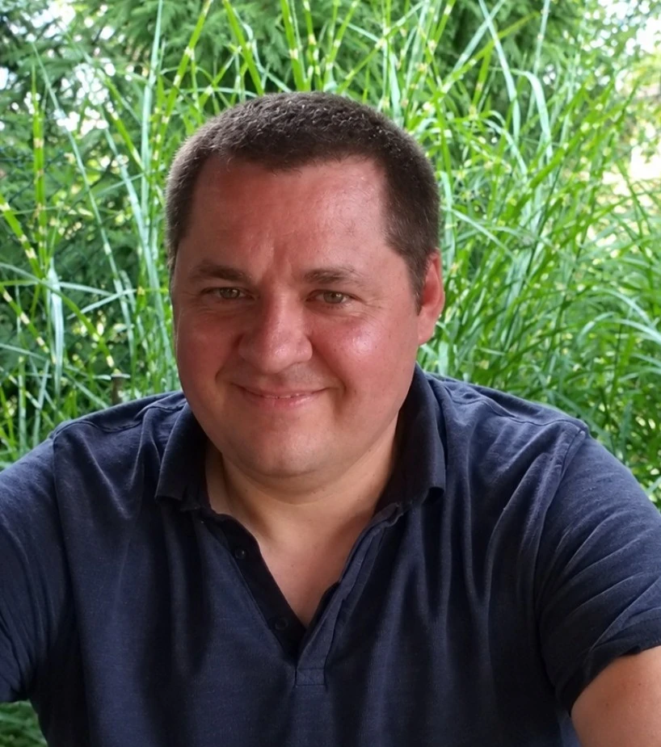

Poezja / Strona autorska
PawełSarna

Książki, poezja i głosy o twórczości.
↓ Dalej
Zapowiedź / 2027
Ptaszyniec
Nowy tom poetycki. Ukaże się w 2027 roku.
Zobacz zapowiedźKsiążki
2000–2024
2024RuskieMiejska Biblioteka Publiczna im. C. K. Norwida w Świdnicy2014Pokój na widokuWydawnictwo FORMA2006Czerwony żagielZielona Sowa2002Biały OjczeNaszZielona Sowa2000Ten i TamtenŚwiadectwo
W tym wspólny debiut z Pawłem Lekszyckim. Pełna bibliografia ↗
Wiersze
Wybór 21 utworów z tomów wydanych w latach 2000–2024.
O autorze
Paweł Sarna — poeta.
Urodził się w 1977 roku w Jaworznie. Jego wiersze tłumaczono na języki hiszpański, czeski, serbski, słowacki i chorwacki. Laureat XVII Ogólnopolskiego Konkursu na Autorską Książkę Literacką – Świdnica 2024 za tom Ruskie.
Biogram poetycki ↗